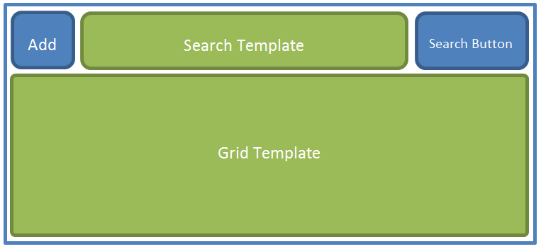
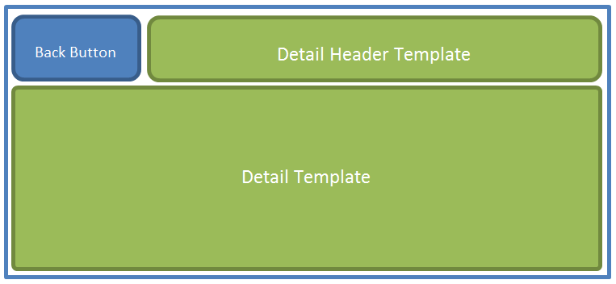

Navigator list is derived from AtomListBox and it adds UI Navigation similar to what is found in common mobile application. This control simplifies Master Detail View. When we select an item or add new item, detail view is slided in. And by clicking on back button, list will appear again.
Navigator list contains Data Pager as well.
List view is outlined as shown in following image. This is default view, navigator list starts with following view. You can customize template as per your requirements.

When we click on an item, detail view opens and it is outlined as follow.

In above sample, detailTemplate is used to display the details. You can hide Search and Add New buttons by customizing templates. New Item property is used to create a new object with default values,
For New Item property, Every property in object must be initialized to some default empty values since undefined is not a bindable value.
As this is derived from AtomListBox, you can change item template and table headers for sorting.